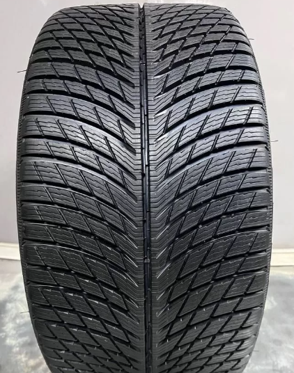
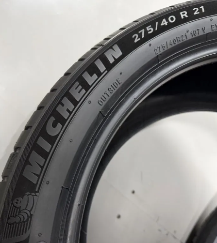
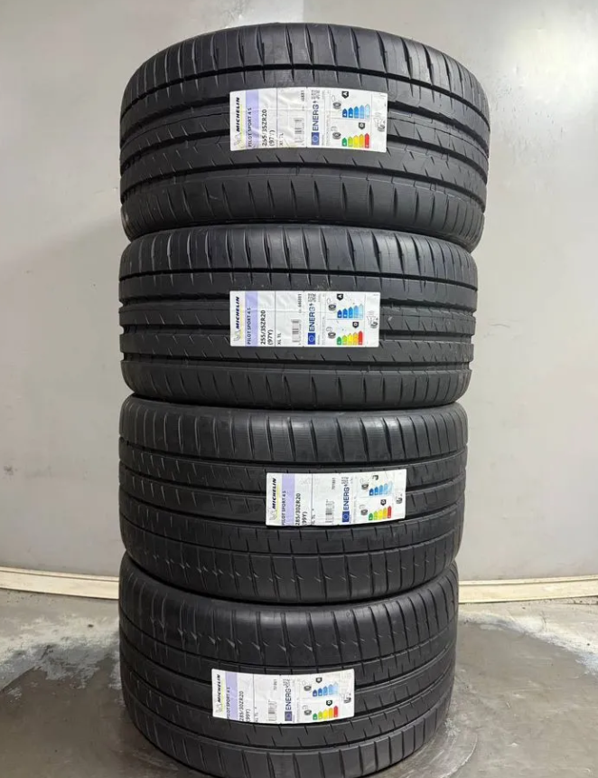

Продажа шин
Подберем комплект под автомобиль, сезон и стиль езды: новые и б/у шины, пары и комплекты R13-R22, включая RunFlat. Наличие и цены смотрите в каталоге на Авито.
Поможем выбрать без лишней переплаты
Уточняем размер, сезонность, индекс нагрузки и стиль езды. Для б/у комплекта проверяем остаток протектора, равномерность износа, год выпуска и отсутствие повреждений.
- Новые и б/у шины
- Пары и полные комплекты
- Размеры R13-R22 и RunFlat
- Проверка перед установкой
- Гарантия


